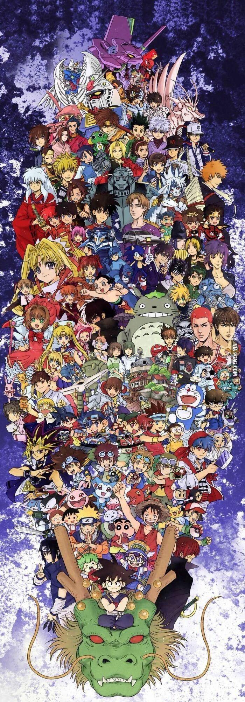
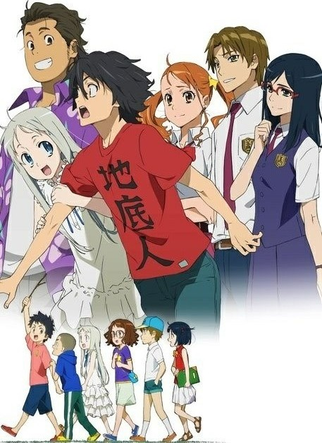
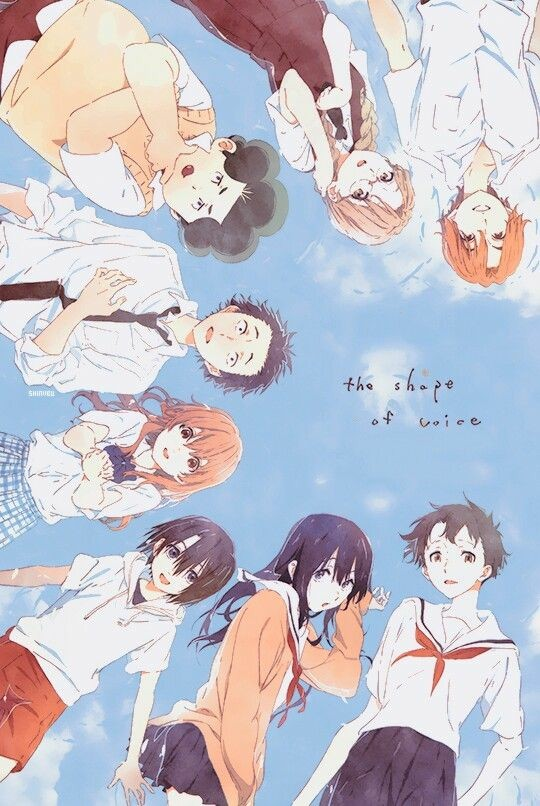
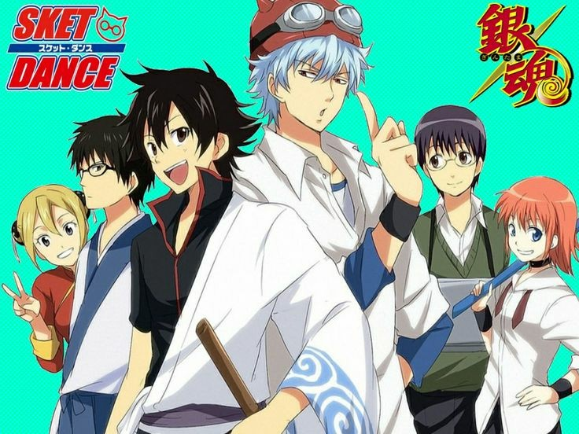
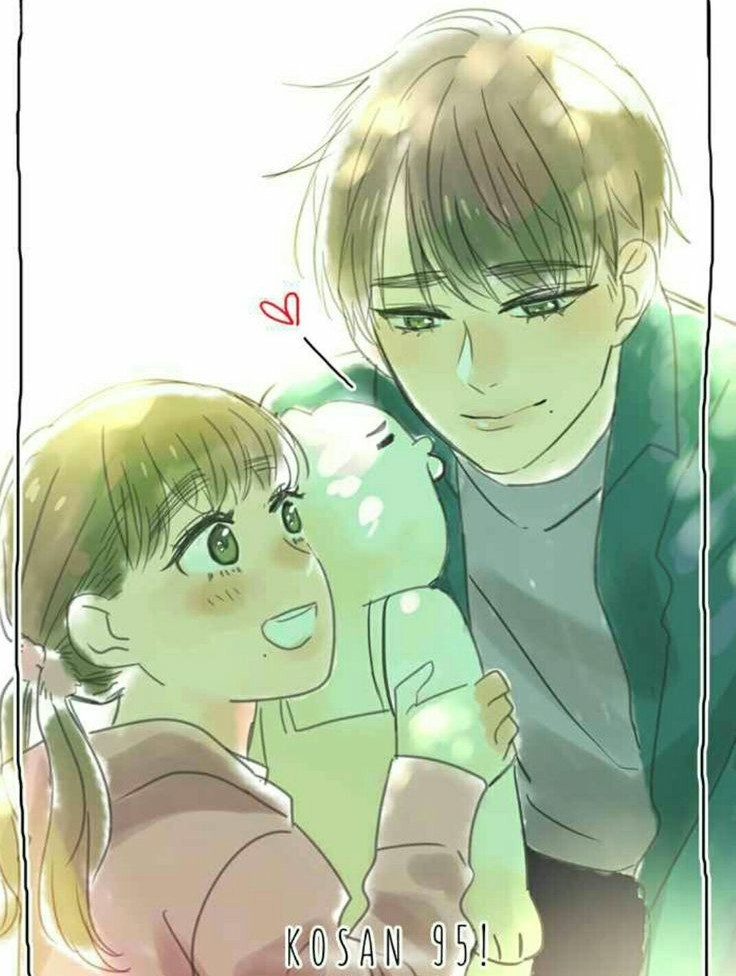

Anime (kartun Jepang) dan manga (komik Jepang) merupakan salah satu dari produk budaya populer yang dipakai Jepang
untuk menyebarkan budayanya.
Di Indonesia, penyebaran anime dan manga dapat dilihat terutama pada tahun 1990-an dengan terbit dan tayangnya salah
satu ikon budaya populer—anime dan manga—Jepang, Doraemon. Hal ini semakin terlihat dengan terbit dan tayangnya juga anime
dan manga seperti Sailor Moon, Dragon Ball, Pokemon, Digimon, dan sebagainya yang memiliki penggemar setia tidak hanya di
Indonesia saja, tetapi juga di Asia bahkan di Amerika. Namun, sayangnya sekarang kita akan sulit menemukan tayangan-tanyang
itu lagi di Indonesia.
Sudah banyak manga yang terbit di Indonesia melalui penerbit seperti Elex Media Komputindo, M&C dan Level dan masih
bertahan hingga sekarang.
|
|
Manga (漫画) merupakan komik yang berasal dari Jepang, begitu juga dengan Anime (アニメ, dibaca "ani-may"),
adalah kartun ala Jepang. Perbedaan manga dan anime dengan komik dan kartun keluaran negara di bagian barat adalah
detail dari gambar tokoh-tokoh dalam cerita. Perbedaan selanjutnya terletak pada konsumennya, kartun dan komik
kebanyakan dibuat untuk anak-anak berusia muda, sedangkan manga dan anime bisa dinikmati oleh orang-orang dari usia
muda hingga dewasa.
Orang jepang pada awalnya tidak menyadari bahwa pop culture ini dapat di hargai sebagai budaya jepang, karena
merupakan sesuatu yang "hanya populer" atau "sesaat" sehingga tidak bisa di sebut budaya, dan banyak orang yang
beranggapan hal itu tidak begitu bernilai.
|
|
|
Sebuah gulungan bergambar yang disebut Chōjū giga, dengan karakter binatang yang digambarkan memiliki
perilaku seperti manusia, yang telah ada di sekitar abad ke-12 dipercaya merupakan manga yang pertama. Namun,
menurut “Manga no Rekishi” (Sejarah Manga), seorang penulis sekaligus peneliti, mendefinisikan manga sebagai
karya yang seharusnya dijual ke masyarakat luas. Oleh karena itu, kedudukan sebagai manga yang pertama jatuh
kepada “Toba Ehon”, yang dikeluarkan oleh salah satu penerbit di Osaka.
Anime pertama yang tercipta pada masa sekitar tahun 1907 adalah Katsudō Shashin (活動写真 atau Gambar Bergerak)
yang berdurasi 3 detik namun menggunakan 50 frame. Anime pendek selanjutnya, pada tahun 1917 yang berjalan selama 2
menit. “Momotarō: Umi no Shinpei” adalah anime pertama pada tahun 1945 yang bisa disebut sebagai sebuah film, karena
durasi waktunya yang cukup panjang.
Ketenaran anime di bagian dunia lain selain Jepang dimulai pada tahun 1963 saat anime Astro Boy (karya Osamu
Tezuka, yang terinspirasi dari karakter-karakter Disney) diputar di luar negeri untuk yang pertama kalinya.
Kini, anime dan manga sudah dikenal sangat luas di berbagai belahan dunia. Tidak sedikit judul-judul anime
yang sangat tenar dan tidak asing terdengar oleh masyarakat-masyarakat dari kalangan usia berapapun.
|
|
|  |
 |
 |
|
Manga dan anime tidak sembarangan hanya menunjukkan sebuah cerita sebagai hiburan, namun di dalam kisah-kisah
tersebut umumnya dapat ditemukan budaya-budaya Jepang, serta berbagai pelajaran tertentu mengenai kehidupan yang
dapat diambil maknanya. Sekarang, variasi cerita dalam manga atau anime yang dapat ditemui sudah sangatlah banyak,
dari yang biasa saja hingga yang tidak cukup masuk di akal sehat manusia. Oleh karena itu, kita sebaiknya juga tidak
asal memilih manga atau anime yang akan dibaca atau ditonton.
|
|
 |
|
Saat ini kita warga Indonesia juga sudah disuguhkan dengan kartun-kartun dan komik produksi khas Indonesia.
Yang terkenal saat ini hingga mampu membawa karya-karya Indonesia ke luar negeri adalah Webtoon dan sejenisnya
sebagai penyedia layanan membaca komik. Di Webtoon kita dapat menemukan banyak karya-karya komikus Indonesia yang
tidak kalah kualitasnya dengan karya dari negara lain. Kita sebagai penikmat suguhan tersebut tentunya sangat
mempengaruhi perkembangan dari produksi negara kita sendiri. Bahkan kita sendiripun dapat menjadi salah satu dari
pencipta karya. Oleh sebab itu, kita boleh suka dengan karya luar negeri termasuk Jepang tapi juga tetap menghargai
produk lokal kita sendiri.
|
|
 |
|